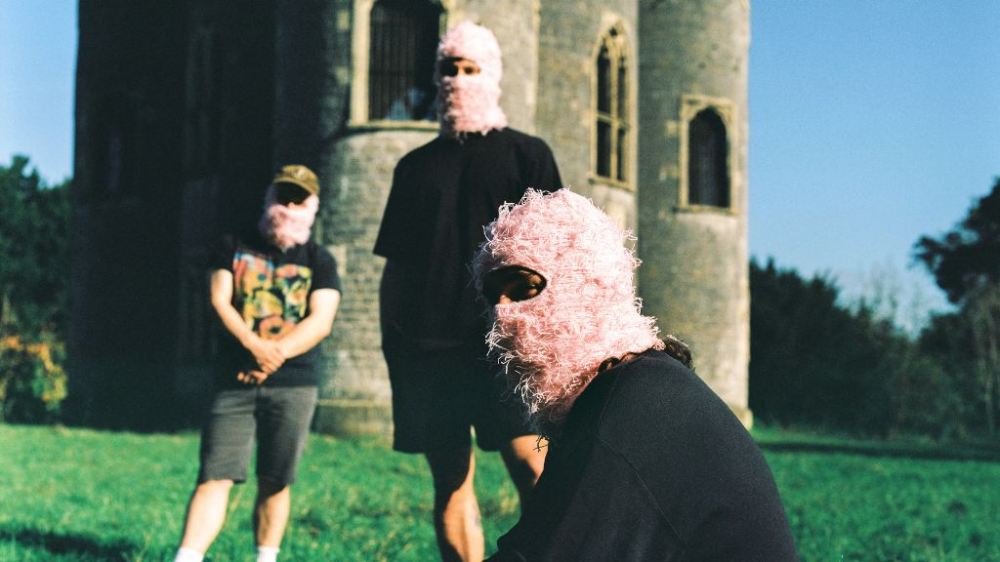

Moletrap Find Their Voice With Mid Welsh, Pt 1

The following feature is now included in our online magazine which is also available in print.
Online Magazine | Print MagazineFor more details contact us at: volechomag@gmail.com
From the Cambrian moors to Bristol's streets of strife, Moletrap are sounding as tough and vital as the terrain that brought them up. The band release Mid Welsh, Pt 1, a five-track EP which manages to both use the crash of guitars and the gentle determination of Mid Wales itself. It is a record, not an album. It is a reckoning with identity, with language, and with what it's like to be from somewhere history books and pop culture have forgotten.
Follow Our Playlist For More Music!
The EP is the product of being in good form. Early singles such as Rhagofn and Middle of the Land were widely hailed for their blend of melodic pop sensibilities and bone-crunching heaviness. BBC Introducing described the music as "un-ignorably great" and vowed "a thousand mosh pits await." Which isn't hype. There is a sense of urgency to these songs that evokes the sense of getting on with it of early Manic Street Preachers, combined with the restless energy of current alt-rock bands like Idles.
What gives Mid Welsh, Pt 1 its bite is not so much the dynamics of the guitars or the authority of the vocals as the earthiness of experience. The members of the band met initially in Welsh-language school, where they once attempted to escape. When they left, all they could do was escape from what they had called "the least settled part of Wales and England." Years later, however, music beckoned them back to their roots. They've discovered their own history, traced the unmarked routes of the Cambrians, and challenged how colonisation and erasure have left their mark on the Welsh language.
All that tension is crammed into every one of those songs. Nation of Sanctuary hails Wales' openness to the world, while Rhagofn cautions against smugness in respect of work remaining to be undertaken. Taffy and What a Beautiful Place gaze inward on issues of heritage and belonging, while the title track is more like a reclaimed anthem. Every cut is full of both urgency and sensitivity, as though the band are grasping something delicate even as they crank the volume to eleven.
Moletrap's sound is full of contradiction in the finest sense. They are bilingual but international, refined but abrasive, politicized but intensely personal. Their riffs crash and churn like the mountains to which they continually refer, but the melody soars with hooks that stick long after the distortion wears off. That dichotomy is what makes Mid Welsh, Pt 1 not only a potent debut album but an important cultural statement.
The band openly talk about the chaos of their musical creation, of jam sessions turned into something far larger. They credit BBC Horizons and all the DJs, writers, and communities that raised them up. That humility only makes the music more powerful. Moletrap are not faking to be saviors of Welsh heritage, but as three friends with guitars, drums, and resolve getting back to where they belong.
Listening to Mid Welsh, Pt 1, you can hear a band still working out their mythology but sounding as though already they have something profound in their hands. Their music is heavy enough to rattle halls but intelligent enough to contain a lesson in history in its chords. Ultimately, Moletrap do just what they aim to do. They sound like the Cambrian Mountains rolling downhill, unstoppable, unquietable.
This dispatch was last updated on September 16, 2025